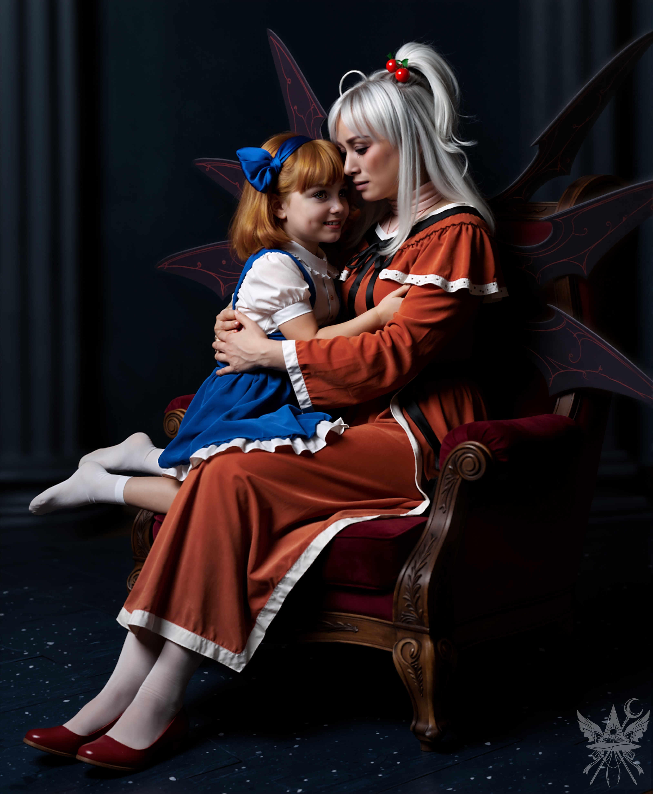

第52章 素晴らしい娘
魔界最古の建造物、パンデモニウム。無機質で冷たい艶を放つ広大な宮殿は、今日もメイドたちの足音と衣擦れの音で満たされている。だが、その整然とした喧騒の底には、拭い去れない重苦しい空気が澱んでいた。神綺による突発的な戦争準備の号令が、日常を脆くも歪ませていたのだ。迫り来る得体の知れない脅威を前に、日々の奉仕にどれほどの意味があるのか。声なき不安が、冷え切った回廊を静かに満たしている。
そんな張り詰めた空間に、二人の新米メイドが紛れ込んでいた。一人は好奇心と慎重さを併せ持つ、熱心な科学者。もう一人は、穏やかな物腰の裏に底知れぬ執念を隠し持つ魔女である。
艶やかな暗青色の石材が敷き詰められた大階段を見上げると、一人の背の高いメイド長が淀みない足取りで上っていくところだった。
「夢子さん、少しよろしいでしょうか？」
（この女が本当に夢子だといいけど……）
呼び止められたメイド長が振り返る。
周囲の空気が一瞬にして凍りついた。大階段の冷涼な静寂の中、彼女が放つのは、研ぎ澄まされた刃のような絶対的な規律と威圧感だ。一切の無駄を削ぎ落とした静的な立ち姿は、侵入者を容赦なく切り捨てる魔王城の冷徹な防壁そのものだった。こちらを見据える視線には、わずかな感情の揺らぎすら存在しない。
「まだ何かご用ですか？ そんなに暇を持て余しているのですか」
氷を滑らせるような、低く鋭い声が鼓膜を打つ。
「あの……アリス様がお戻りになったと伺ったのですが。本当でしょうか？」
言葉を慎重に選びながら尋ねる。
「あら、まだお会いになっていないのですか？ まさか、歓迎の場に居合わせなかったなどということはないでしょうね？ ……やはり、仕事を怠けていたのですね」
氷点下の声音が降り注ぐ。
「とんでもない。三人分の仕事をこなしていましたよ」
重い箱を運ばされて強張った肩をさりげなく庇いながら、従順な笑みを浮かべた。
「ただ、アリス様がお戻りになったなど……どうしても信じられなくて」
「ええ、私も時折信じられなくなることがあります。ですが、変わったのは外見だけではありませんよ」
夢子の声に、ほんのわずかながら、身内を語るような温度が混じる。
「今のアリス様は、以前よりずっと賢くなられました。自分が母親にとってどれほど大切な存在であるか、ようやく理解なさったようです。ですから、神綺様への愛情を、もうお隠しにはなりません。そりゃあそうでしょう、あんなに長い時間が経っているのですから……。あら、もうこんな時間。あなたたちも、邪魔をせずにさっさと仕事に戻りなさい」
それだけを言い残し、夢子は再び冷たい足音を響かせて階段を上っていく。
その背中を見送りながら、傍らのちゆりに小声で囁いた。
「私は夢子の後を追うわ。ちゆりは地下室を調べて。何か面白いものがあるかもしれない」
「了解！ 地下室、こっそり調べてくるよ」
「シーッ。なんでこっそりなのよ。私たちはパンデモニウムのメイドなんだから、堂々と歩けばいいの。地下の武器とか、戦争のこととか……色々探ってきて」
「わかった！ 何かあったら連絡する」
ちゆりは短く頷き、地下へと続く階段を身軽に下りていった。
（いよいよ本番ね）
右ポケットの無線機と左ポケットのクリソプレーズの感触を確かめ、夢子の後を追う。吹き抜けから見上げても、夢子の姿は遥か上階にある。疲れを知らぬメイド長を追跡するため、息を殺して四階分もの階段を駆け上がらなければならなかった。
（さすが魔界最強ね……）
五階に到達し、わずかに息を乱しながらも廊下の角から様子を伺う。暗青色の石壁と真紅の絨毯が延々と続く、特徴のない廊下だ。夢子は左手にある小さな扉の中へと消えた。後を追おうと足を踏み出しかけた瞬間、肌を粟立たせるような嫌な予感が背筋を駆け抜けた。咄嗟に、通路に置かれた巨大な衣装ダンスの陰へ身を滑り込ませる。
その直感は正しかった。わずか十秒後、夢子が金の髪飾りを手に部屋から飛び出してきて、足早に先へと進んでいったのだ。新しい靴のおかげで足音を殺しながら小走りで後を追い、彼女が入っていった豪奢な扉の前に立つ。金細工の彫刻が施されたその重厚な扉を、背後に誰もいないことを確認してから、わずかに押し開けた。
そこは寝室だった。誰もいないことを確認し、見つかるリスクを承知の上で意を決して中へ足を踏み入れる。
（あのタンスに……隠れるしかないか……！）
再び忍び寄る胸騒ぎに従い、ドレスや毛皮のコートがずらりと並ぶ巨大なクローゼットの中へ身を潜める。扉の隙間から寝室の様子を伺うが、数分が経過しても何も起こらない。しかし、今ここを出るのは危険すぎる。息を潜めたまま、さらに待ち続けた。
十数分が経過し、痺れが腰から這い上がってきた頃。奥の扉が、音もなく開いた。
入ってきたのは、小柄な少女だった。

少女は音もなく腰を下ろすと、小さく足を揺らし始めた。ひんやりとした静寂が支配する空間の中で、彼女の横顔はひどく穏やかで、何の感情も読み取ることはできない。ただそこにある張り詰めたような静けさが、クローゼットの暗がりから覗き見るこちらの息を詰まらせた。
ほどなくして、もう一人の女性が部屋に姿を現した。
（神綺……！）
直感で理解した。若々しい輪郭の奥に、途方もない年月と深い悲哀を宿した瞳。魔界の硬貨に刻まれた姿そのものの女性だ。
「ママ！」
その声が響いた瞬間、アリスは神綺の胸へと飛び込んだ。

神綺が腰を下ろし、アリスを抱き抱える。それまで張り詰めていた冷たい空気が、ふたりの間にある局所的な温もりによって、一瞬にして柔らかなものへと塗り替えられていく。暗がりからこの無防備な母娘の時間を覗き見ることに、背徳感にも似た特有の緊張が走った。
「アリス、私の愛しい子……。あなたにママと呼んでもらえる日を、ずっと夢見ていたのよ……」
神綺の声は涙に濡れ、震えていた。
アリスは言葉を発さず、もう一度神綺にキスをする。神綺はアリスの髪に顔を埋め、激しく泣きじゃくり始めた。
アリスは神綺の背中を優しく撫でながら、甘ったるい声で囁く。
「ごめんね、ママ……。家出したこと、全部アリスが悪かったの。ママはずっとアリスのママだったのに……。あの時、素直にママって呼んでればよかった……。アリス、ママのこと大好きなの！」
神綺はしばらく泣きじゃくった後、ゆっくりと息を整え、娘の顔を悲しげに見つめた。
「ねぇ、ママ……聞いて。幻想郷で色々あったの……。ひどい目に遭って、やっとわかったんだ。アリスの本当の居場所は……ここ、魔界なんだって！」
「そうよ、アリス。あなたはいつでも……ここに帰って来られるの。魔界こそが、あなたの家なのよ。だから……アリスを傷つけた幻想郷の愚か者たちを、絶対に後悔させてあげるわ」
冷たく重い、創造主としての残酷な宣言だった。
「でも……本当に幻想郷に攻め込むの？ 魔界の人たちまで巻き込まれちゃう……」
アリスが不安そうに身をすり寄せる。
「それでも構わないわ、アリス。魔界の住人たちは皆、私の子供なの。必要とあれば……喜んで命を捧げてくれるでしょう。あなたを……二度と誰にも傷つけさせない。どこにも行かせない。あなたは……私の……宝物……！」
神綺は激しい感情を抑えきれず、声を震わせた。
「うん！ アリスも、もうママから離れない。約束する！」
（……なんて恐ろしい愛情……！）
クローゼットの陰で息を殺しながら、胃の腑が粟立つような戦慄を覚えた。娘を想う神綺の深く盲目的な愛情が、幻想郷というひとつの世界を本気で滅ぼそうとしているのだ。
部屋の扉が音もなく開き、夢子が入ってきた。
「お邪魔いたします。お話中、申し訳ございません。夕食の準備が……」
「ええ、夢子、ありがとう。アリスと私は、もう二度と離れないと決めたのよ。本当に、素晴らしい娘だわ」
夢子は深く頭を下げると、神綺の背後に立ち、静かに髪を解き始めた。完璧な手つきで一本一本を整えていく。アリスは神綺の膝の上で、大人しくドレスの裾を握りしめている。
「神綺様、武器の最終確認が完了いたしました。予定通りに進めば、明日ご出発いただけます」
「心強いわ、夢子」
神綺は目を閉じ、娘の頭を優しく撫でた。
十分、二十分と時間が過ぎていく。狭い空間に閉じ込められたまま、痺れる足の痛みに必死に耐え続けた。身動き一つすれば、すべてが終わる。
やがて、夢子が重苦しい沈黙を破った。
「恐れながら、夕食の準備のため、失礼いたします。窓と扉に設置した結界の最終確認が完了いたしましたら、すぐに参ります」
「結界？ ああ、あの水晶のことね」
「はい。神綺様とアリス様のご不在中に、何者かが宮殿に侵入することを考慮し、設置させていただきました。後は、中央エネルギー源との接続を行うのみでございます」
「そう。分かったわ、夢子。一時間後に食堂で待ってるわ」
夢子が一礼して部屋を去ると、アリスが子供のように神綺の膝の上で跳ねる。
「ママ？」
「どうしたの、アリス？」
「アリス、ちょっとだけお出かけするわ。後で素敵なプレゼント、あげるね！」
「どこへ行くの？」
神綺が心配そうに尋ねると、アリスはいたずらっぽく微笑んだ。
「秘密！ ママ、楽しみにしててね！」
「わかったわ。ママは書斎で待ってるわ。夕食には間に合うように帰ってきてね、アリス」
アリスは神綺の鼻先にキスを落とし、部屋を出て行った。神綺もまた、娘の後を追うように書斎へと向かう。
（……足が……！）
二人の気配が完全に消えたことを確認し、転がり出るようにクローゼットから脱出する。床にへたり込み、感覚を失った足を乱暴に揉みほぐした。
痛みが引くのを待ちながら寝室を一周し、ベッド脇の戸棚を探るが、鍵らしきものは見当たらない。代わりに、ダイヤモンドがちりばめられた豪奢なネックレスが見つかった。魔力で探ってみたが、ただの装飾品のようだ。
「私よ。聞こえる？」
『――ジージー――聞こえる！ 大発見だ！』
ノイズ混じりの、興奮したちゆりの声が返ってきた。
『地下室に、カラフルで不思議な杖と盾が山ほどあるんだ。魔法っていうか、機械みたいでさ……。燃料は見つからなかったけど。杖と盾はどうする？ ドレスに隠して持ち出せるかもしれないけど……。何か要る？ ってか、次はどうするんだ？』